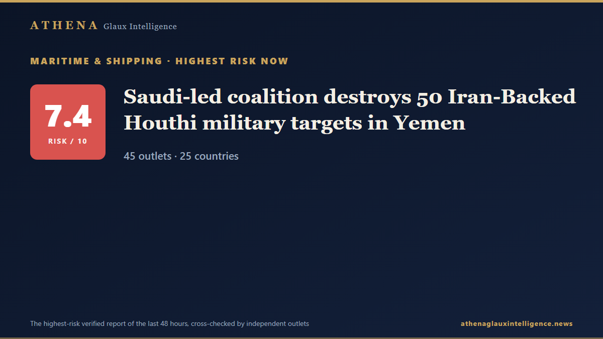
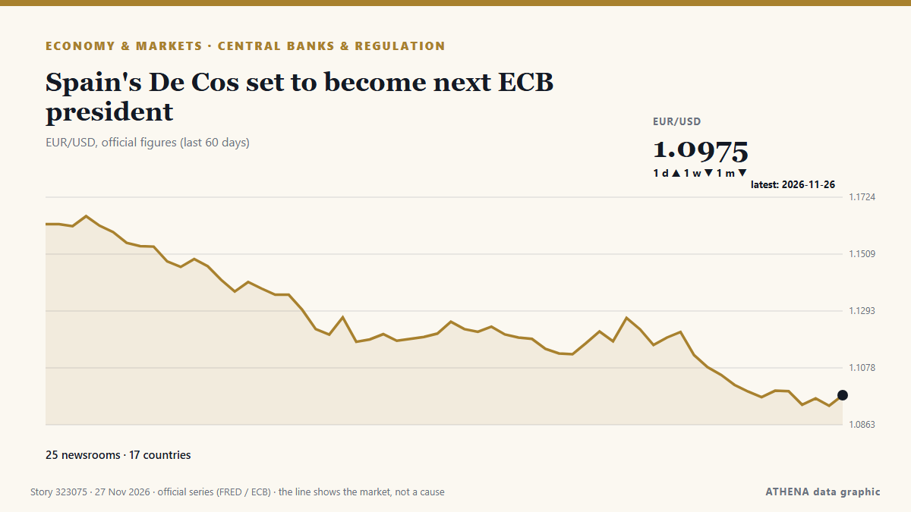

Κίνδυνος 7.9Αυξημένος
Γεωπολιτική, οικονομία και θαλάσσια ναυτιλία — διασταυρωμένα σε πολλές χώρες.
Γεωπολιτική
Όλη η Γεωπολιτική >Υψηλότερος κίνδυνος τώρα

Αυξανόμενος κίνδυνοςΑύξηση τις τελευταίες 24 ώρες
- Clashes at Besiktas match against Israeli club spark diplomatic rowΚίνδυνος 0.0 → 5.4
- Trump, NATO chief urge Russia not to expand war in UkraineΚίνδυνος 2.2 → 7.1
- Italy's Meloni concerned after Ukraine attack on Russian ship in LibyaΚίνδυνος 0.9 → 5.5
Ναυτιλία & ναυσιπλοϊα
Γραφείο Ναυτιλίας >Υψηλότερος κίνδυνος τώρα
Κίνδυνος 7.4Αυξημένος
Saudi-led coalition destroys 50 Iran-Backed Houthi military targets in Yemen
Δείτε τα στοιχεία ›
Πίνακας παρακολούθησηςΠεράσματα, λιμάνια και άλλες ναυτιλιακές αναφορές
- Strait of HormuzΔιαταραχήattack / strike · risk 7.1 · 138 newsrooms (72 h)
- Kerch Strait / Black SeaΔιαταραχήattack / strike · risk 7.9 · 136 newsrooms (72 h)
- SingaporeΔιαταραχήattack / strike · risk 7.1 · 138 newsrooms (72 h)
Κάθε είδηση, ελεγμένη σε πολλές χώρες.
Το ATHENA Glaux παρακολουθεί 743 ειδησεογραφικά μέσα σε όλο τον κόσμο. Μια είδηση γίνεται επαληθευμένο γεγονός μόνο όταν την αναφέρουν ανεξάρτητα μέσα. Κάθε γεγονός δείχνει ποιος το ανέφερε πρώτος και έναν βαθμό κινδύνου με τους λόγους του.
1.741γεγονότα σε 24 ώρες
743μέσα που παρακολουθούμε
37λεπτά ανάμεσα στις ενημερώσεις
Σεισμός ή πλημμύρα κοντά σας αυτή την εβδομάδα;
Γράψτε την πόλη σας και δείτε σεισμούς, πλημμύρες, καταιγίδες και επίσημες προειδοποιήσεις κοντά της, με λίστα κιτ έκτακτης ανάγκης 72 ωρών. Δωρεάν, χωρίς εγγραφή, και η περιοχή σας μένει στη συσκευή σας.
Αναφορές έρχονται από ανεξάρτητα μέσα — όταν δύο συναντηθούν στην ίδια ιστορία, γίνεται επιβεβαιωμένο γεγονός.
Πώς ελέγχει το ATHENA μια είδηση
- ΣυλλογήΟι αναφορές φτάνουν από ανεξάρτητα μέσα σε πολλές χώρες.
- ΑντιστοίχισηΌταν δύο μέσα συναντιούνται στην ίδια είδηση, γίνεται επαληθευμένο γεγονός.
- ΕξήγησηΚάθε γεγονός δείχνει ποιος ήταν πρώτος, πόσο εξαπλώθηκε και γιατί ο κίνδυνος είναι αυτός.
Παγκόσμια προοπτική κινδύνου
Εβδομαδιαίες και μηνιαίες επισκοπήσεις: τα γεγονότα υψηλότερου κινδύνου, οι τάσεις ανά τομέα και περιοχή και τι να παρακολουθήσετε.
Διαβάστε την προοπτική ›Ημερήσια ενημέρωση
Τα δέκα σημαντικότερα γεγονότα της ημέρας στον κόσμο, οι αυξανόμενοι κίνδυνοι και τα νέα γεγονότα, με κάθε αριθμό εξηγημένο.
Ανοίξτε τη σημερινή ενημέρωση ›
Οικονομία & ΑγορέςSpain's De Cos set to become next ECB president
Former Bank of Spain Governor and current Bank for International Settlements General Manager Pablo Hernandez de Cos was supposedly endorsed by a majority of European countries as the next European… από AzerNews
6.4Σημασία
2.0Κίνδυνος · χαμηλός
91%Βεβαιότητα
Οι τίτλοι των ειδήσεων παρουσιάζονται στα αγγλικά, όπως δημοσιεύτηκαν.
Τεχνολογία & Κυβερνοασφάλεια
Hackers target Taiwan's semiconductor supply chain, fishing and food sectors
Nine hacker groups are running 18 active campaigns against Taiwan as AI speeds up attacks, Cyfirma says. από DigiTimes Asia
Ενέργεια & Περιβάλλον
Diesel tanker carrying up to 7,000 tonnes sinks near Ibiza, killing one
An oil tanker carrying up to 7,000 tonnes of diesel has sunk off the coast of Ibiza, leaving one crew member dead, authorities have said. από Daily Mirror
Χορηγούμενο
Cybernetics and Artificial Intelligence Lab Welcome to the Cybernetics and Artificial Intelligence Laboratory, established at the Department of Business Administration of the National and Kapodistrian University of Athens. The lab is headed by Professor Dimitrios Thomakos. The lab aims to do research that can be published in top venues. Our research uses tools and methods of Artificial Intelligence, and lies in the following areas: - Forecasting - Decision making - Cyber security - Finance We are always looking forward to collaborating with exceptional students!
Μάθετε περισσότερα – Cybernetics and Artificial Intelligence LabΠλοία στα θαλάσσια περάσματα τώρα
Ζωντανές μετρήσεις AIS. Πατήστε ή περάστε πάνω από μια μπάρα για λεπτομέρειες.
Τελευταίες αναφορές
Macron calls $223B in cuts to EU long-term budget proposal a ‘strategic mistake’
Settlers smash foundations of Palestinian family's homes in West Bank
Tinubu approves houses, N100m each for families of NAF crash victims
Heavy rain, wind and flooding plague much of US on Thanksgiving holiday
Tommy Robinson’s ex-wife avoids jail for failing to provide loan records
Lawal strengthens Zamfara Forest Guards, reaffirms decision not to negotiate with bandits
US maker of Marlboro cigarettes mulls over bid for Imperial Brands
EU leaders divided over budget spending as they weigh a $49 billion loan to Ukraine
Τεχνολογία & Κυβερνοασφάλεια
Five questions over Nvidia's China chip trail that Huang's return has not settled
For Nvidia shareholders, the main risk is regulatory rather than personal. από investingLive (ForexLive)
Ενέργεια & Περιβάλλον
Saudi Arabia Stresses Human Responsibility in AI Use
On November 4, 2026, a raft of cooperation agreements, including a landmark defense agreement, were signed between Saudi Arabia and Syria during Syrian President Ahmed al-Sharra’s visit to Riyadh. από Rasanah IIIS
Γεωπολιτική
MPs to be given first vote on Andy Burnham’s new EU deal next month
A debate will be held in the Commons on December 7, with a vote expected to follow. από Evening Standard (London)
Γεωπολιτική, Πολιτική & Ασφάλεια
Περισσότερα ›Διπλωματία & σύνοδοι
2 S. Korean naval submarines under repair after accidents
SEOUL, Nov. 27 (Yonhap) -- Two of the South Korean Navy's attack submarines are ... από Yonhap (English)
- Εκλογές & πολιτική
Armenia plans full withdrawal of Russian border guards in coming years, prime minister says
- Πόλεμοι & συγκρούσεις
Ukraine says Benghazi drone attack not directed against Libya
- Εκλογές & πολιτική
‘What pressure?’: Salahuddin on Hasina’s reported plan to return on December 16
- Πόλεμοι & συγκρούσεις
Turkey, Saudi Arabia and Pakistan to discuss Yemen war
Οικονομία, Χρηματοοικονομικά & Αγορές
Περισσότερα ›Κεντρικές τράπεζες & εποπτεία
Cards overtake cash at eurozone points of sale – ECB report
People still value hard currency and having different payment options, bank’s annual survey finds. από Central Banking
- Τράπεζες & πίστη
Bradesco chairman Trabuco agrees to become Brazil’s finance minister
- Κρυπτονομίσματα & ψηφιακά στοιχεία
Binance lifts withdrawal suspension after $6.3 billion crypto heist
- Πληθωρισμός & επιτόκια
EUR/USD might be bottoming out amid peak Fed hawkishness and dovish repricing risks
- Τράπεζες & πίστη
EU leaders struggle to agree on long-term budget, $49bn Ukraine loan
Εμπόριο, Βιομηχανία & Υποδομές
Περισσότερα ›Κατασκευές & υποδομές
Iran rapidly builds underground complex near nuclear sites – US institute
Iran is rapidly constructing a fortified underground complex between two of its main nuclear sites that could house weapons systems or infrastructure linked to its nuclear program, a Washington-based… από Iran International (English)
- Δασμοί & έλεγχοι εξαγωγών
EU rejects new US tariffs targeting industrial overcapacity
- Γεωργία & επισιτιστική ασφάλεια
Body of missing Bulgarian man found; employer confessed murder
- Αερομεταφορές, σιδηρόδρομος & οδικές
Thanksgiving storm knocks out power, disrupts flights on US East Coast
- Αερομεταφορές, σιδηρόδρομος & οδικές
Déjà vu in Miami as FedEx MD-11 freighter overshoots runway
Ενέργεια, Πόροι & Περιβάλλον
Περισσότερα ›Ακραία καιρικά & φυσικές καταστροφές
Macy’s Thanksgiving Day Parade 2026: Why It’s Been Postponed And When And Where To Watch
The 2026 Macy’s Thanksgiving Day Parade has been postponed until Saturday, November 28. από Forbes Business
- Πετρέλαιο & φυσικό αέριο
Iraq PM sacks senior officials over oil smuggling scandal
- Ακραία καιρικά & φυσικές καταστροφές
Nepal begins process to declare 213 missing Indians dead in August floods
- ΑΠΕ & αποθήκευση
US Senate ‘permitting bill’ threatens clean water protections to speed up energy projects
- ΑΠΕ & αποθήκευση
Fincantieri Delivers Hybrid Hydrogen-Powered Cruise Ship to Viking
Τεχνολογία, ΤΝ & Κυβερνοασφάλεια
Περισσότερα ›Διάστημα & δορυφόροι
U.S. approves SpaceX plan to deploy 1 million satellites for data centres in space
The Federal Communications Commission (FCC) is authorizing Elon Musk's SpaceX to deploy a constellation of one million satellites for data centres in space, the agency said on Wednesday. από CBC News (alternative feed)
- Κυβερνοασφάλεια
Fifa confirms internal data stolen in cyber attack
- ΜΜΕ & παραπληροφόρηση
French far-right leader Bardella faces fresh anti-Semitism accusations in media reports
- Επεξεργαστές & υπολογιστική
US finds no evidence China directed executive to spy on Nvidia CEO, WSJ reports
- Επεξεργαστές & υπολογιστική
Nate Silver predicts Trump ‘absolutely’ could be impeached over Nvidia’s China chip sales
Επιχειρήσεις, Εταιρείες & Επενδύσεις
Περισσότερα ›Πτωχεύσεις & αναδιαρθρώσεις
Nigeria: President Tinubu Felicitates ADC Presidential Candidate Atiku Abubakar At 80
[Presidency Nigeria] I extend my warmest congratulations to former Vice President and African Democratic Congress Presidential Candidate, Alhaji Atiku Abubakar, on his 80th birthday today, November… από AllAfrica
- Κλάδοι & εταιρικοί κίνδυνοι
Christmas shopping season starts in Europe
- Εταιρική στρατηγική
MSC Cruises takes delivery of LNG-powered ship in France
- Εταιρική στρατηγική
Parliament Approves One-Off Excess Profits Tax for Some Companies
- Επενδύσεις
Nissan poised to import cars from China to Japan for first time
Δυστυχήματα & έκτακτες ανάγκες
Περισσότερα ›Δυστυχήματα & έκτακτες ανάγκες
Egypt detains a driver suspected of causing Cairo tanker crash that killed 31
Egyptian authorities have detained a driver suspected of causing a fuel tanker to overturn on a major highway in Cairo. από ABC News (International)
- Δυστυχήματα & έκτακτες ανάγκες
One killed, five injured in BNP factional clash in Munshiganj
- Δυστυχήματα & έκτακτες ανάγκες
Ukrainian man in critical condition after setting himself on fire in central Warsaw
- Δυστυχήματα & έκτακτες ανάγκες
High-quality medieval armor discovered in shipwreck that sank in 1495
- Δυστυχήματα & έκτακτες ανάγκες
A year after Hong Kong's deadliest fire in decades, authorities are wary of memorials
Τρεις τρόποι να διαβάσετε σήμερα
Ξεκινήστε από αυτόν που ταιριάζει στον χρόνο σαςΕπαληθευμένα γεγονότα
Κατά σειρά έκτασης της κάλυψης
- Trump’s Nvidia Shares Gained Up to $14.8M After Huang’s Return188 μέσα · 56 χώρεςΚίνδυνος 4.5
- Two Californian Nvidia AI chip customers are really Chinese-owned120 μέσα · 49 χώρεςΚίνδυνος 4.2
- France Defends Ukraine’s Strikes on Russian Vessels off Libya122 μέσα · 48 χώρεςΚίνδυνος 6.2
- Κίνδυνος 4.8
- Drone attack kills 11 in Sudan’s West Kordofan: medical source56 μέσα · 31 χώρεςΚίνδυνος 7.0
Γραφείο Αξιολόγησης
Κάντε μια ερώτηση και διαβάστε τεκμηριωμένη αξιολόγηση μιας βασικής είδησης, μαζί με το τι θα την διέψευδε.
Ανοίξτε το Γραφείο Αξιολόγησης ›Η σημερινή εικόνα
| 02:00 | 404 |
|---|---|
| 03:00 | 166 |
| 04:00 | 428 |
| 05:00 | 450 |
| 06:00 | 308 |
| 07:00 | 581 |
| 08:00 | 383 |
| 09:00 | 366 |
| 10:00 | 569 |
| 11:00 | 392 |
| 12:00 | 481 |
| 13:00 | 402 |
| 14:00 | 464 |
| 15:00 | 715 |
| 16:00 | 753 |
| 17:00 | 644 |
| 18:00 | 494 |
| 19:00 | 372 |
| 20:00 | 1448 |
| 21:00 | 1407 |
| 22:00 | 1049 |
| 23:00 | 634 |
| 00:00 | 519 |
| 01:00 | 404 |
Κίνδυνος των σημερινών γεγονότων
Γεωπολιτική143Οικονομία & Αγορές61Εμπόριο & Βιομηχανία53Επιχειρήσεις51Ενέργεια & Περιβάλλον37Τεχνολογία & Κυβερνοασφάλεια34Ναυτιλία4
Αναδυόμενα σήματα
- Νέο όνομα στις ειδήσεις · Ενεργό τώραIbiza
- Απότομη αύξηση · Ενεργό τώραRheinmetall
- Απότομη αύξηση · Ενεργό τώραThanksgiving Day
- Απότομη αύξηση · Ενεργό τώραRing Road
- Απότομη αύξηση · Ενεργό τώραJazan
Επίσημες προειδοποιήσεις
- M 6.5 - Vanuatu regionM6.5 · USGS ·
- M 5.9 - 238 km SW of Yanglong, ChinaM5.9 · PAGER yellow · USGS ·
Μείνετε ενημερωμένοι
ATHENA Weekly Risk Picture
Οι μεγαλύτεροι γεωπολιτικοί, οικονομικοί και ναυτιλιακοί κίνδυνοι της εβδομάδας, διασταυρωμένοι και βαθμολογημένοι.
Κάθε Παρασκευή στις 08:00 ώρα Ελλάδας · δωρεάν · στα αγγλικά
Δωρεάν εγγραφήΤο ATHENA στο Telegram
Οι ειδήσεις τη στιγμή που δημοσιεύονται: έκτακτα γεγονότα με κίνδυνο 6 ή περισσότερο, ωριαία σύνοψη, ενημερώσεις κινδύνου και η ημερήσια ενημέρωση στις 10:00.
Δωρεάν · αναρτήσεις στα αγγλικά · αποχωρείτε όποτε θέλετε
Είσοδος στο κανάλιΤην εγγραφή τη διαχειρίζεται η beehiiv με διπλή επιβεβαίωση: τίποτα από όσα πληκτρολογείτε δεν αποστέλλεται στο ATHENA, και κάθε τεύχος έχει σύνδεσμο διαγραφής.
Παρακολούθηση κινδύνων
Περισσότερα ›Στενά του ΟρμούζΚίνδυνος 5.311 νέα αυτή την εβδομάδα · μείωση από 21 την προηγούμενη εβδομάδαΕρυθρά ΘάλασσαΚίνδυνος 7.315 νέα αυτή την εβδομάδα · μείωση από 46 την προηγούμενη εβδομάδαΕλληνοτουρκικάΚίνδυνος 3.76 νέα αυτή την εβδομάδα · περίπου όσα και την προηγούμενη εβδομάδαΚύπροςΚίνδυνος 3.812 νέα αυτή την εβδομάδα · μείωση από 17 την προηγούμενη εβδομάδαΚυρώσεις κατά της ΡωσίαςΚίνδυνος 6.414 νέα αυτή την εβδομάδα · περίπου όσα και την προηγούμενη εβδομάδαΠόλεμος στην ΟυκρανίαΚίνδυνος 7.0214 νέα αυτή την εβδομάδα · μείωση από 266 την προηγούμενη εβδομάδαΜέση Ανατολή: Ισραήλ – ΓάζαΚίνδυνος 7.072 νέα αυτή την εβδομάδα · μείωση από 95 την προηγούμενη εβδομάδαΤαϊβάνΚίνδυνος 2.711 νέα αυτή την εβδομάδα · περίπου όσα και την προηγούμενη εβδομάδαΠετρέλαιο και φυσικό αέριοΚίνδυνος 6.830 νέα αυτή την εβδομάδα · περίπου όσα και την προηγούμενη εβδομάδαΔιώρυγα του ΣουέζΚίνδυνος 0.01 νέα αυτή την εβδομάδα · μείωση από 3 την προηγούμενη εβδομάδαΣτενά του ΒοσπόρουΚίνδυνος 0.00 νέα αυτή την εβδομάδαΔιώρυγα του ΠαναμάΚίνδυνος 0.00 νέα αυτή την εβδομάδαΣκιώδης στόλοςΚίνδυνος 3.52 νέα αυτή την εβδομάδα · μείωση από 3 την προηγούμενη εβδομάδαΝαυσιπλοΐα στη Μαύρη ΘάλασσαΚίνδυνος 0.00 νέα αυτή την εβδομάδα · μείωση από 5 την προηγούμενη εβδομάδαΚεντρικές τράπεζες και επιτόκιαΚίνδυνος 4.243 νέα αυτή την εβδομάδα · περίπου όσα και την προηγούμενη εβδομάδαΕλληνική οικονομίαΚίνδυνος 1.59 νέα αυτή την εβδομάδα · αύξηση από 7 την προηγούμενη εβδομάδαΕνέργεια στην Ανατολική ΜεσόγειοΚίνδυνος 0.02 νέα αυτή την εβδομάδα · μείωση από 4 την προηγούμενη εβδομάδαΒαλκάνιαΚίνδυνος 4.913 νέα αυτή την εβδομάδα · μείωση από 26 την προηγούμενη εβδομάδαΜεταναστευτικό στη ΜεσόγειοΚίνδυνος 1.21 νέα αυτή την εβδομάδα · μείωση από 3 την προηγούμενη εβδομάδα
Παγκόσμιοι κίνδυνοι — εβδομάδα 48, 2026 (23–29 Νοε) ›
Ανά τον κόσμο
Μέση Ανατολή & Βόρεια ΑφρικήSaudi Arabia Stresses Human Responsibility in AI Use
57 γεγονότα
Βόρεια ΑμερικήTrump’s Nvidia Shares Gained Up to $14.8M After Huang’s Return
56 γεγονότα
ΕυρώπηMPs to be given first vote on Andy Burnham’s new EU deal next month
56 γεγονότα
Νοτιοανατολική ΑσίαTrump says trade deal reached between the U.S. and the Philippines
54 γεγονότα
Νότια ΑσίαBangladesh raises minimum wage for garment workers after weeks of protests
52 γεγονότα
Υποσαχάρια ΑφρικήTwo Californian Nvidia AI chip customers are really Chinese-owned
43 γεγονότα
Ρωσία & ΕυρασίαRussia: 872 Ukrainian drones shot down in 24 hours
41 γεγονότα
Ανατολική Ασία2 S. Korean naval submarines under repair after accidents
39 γεγονότα
ΩκεανίαAustralia reaffirms Pacific climate commitment despite COP31 outcome
33 γεγονότα
Λατινική Αμερική & ΚαραϊβικήHuawei found guilty in trade secrets theft case
26 γεγονότα